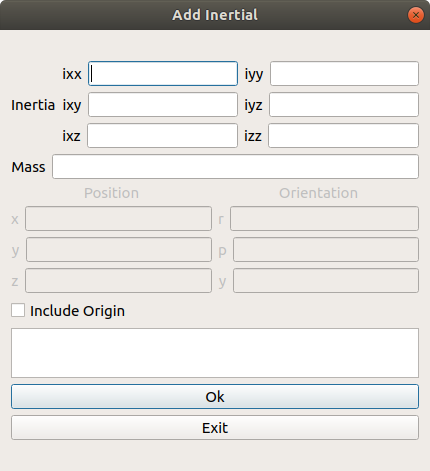
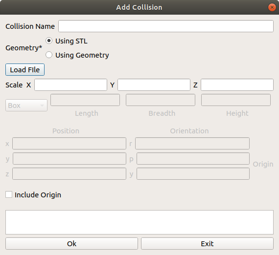

Create an object¶
Contents
An environment object can be used to create a visual representation of an object in a real robotic workcell, or additionally to act as a collision object to be taken into account during path planning

An object is required to have minimally one link that will be used to connect to the external world. This link will be selected under the Object Child Link Field. The type of joint you would want to connect to the world is also specifed in the field below
Adding Links¶
To find out more about each component, Check out this link that describes the various aspects of a Link
For an object, there should be at least one link that connects this object to the external world
Adding Visual Component¶
The visual properties of the link. This element specifies the shape of the object (box, cylinder, etc.) for visualization purposes.

Adding Inertial Component¶
This window allows you to add the inertial properties of the link. This aspect is __optional__ and will default to zero mass and zero inertia if it is not specified.
{kind=link}
Inertia
The 3x3 rotational inertia matrix, represented in the inertia frame. Because the rotational inertia matrix is symmetric, only 6 above-diagonal elements of this matrix are specified here, using the attributes ixx, ixy, ixz, iyy, iyz, izz.
Origin
Mass
Mass of the Link
Adding Collision Component¶
This allows you to describe the collision properties of the link. To reduce computation time, simpler collision models can be used to describe the object compared to the visual components
{kind=link}
Adding Joints¶
To find out more about each component, Check out this link that described the various aspects of a Joint
Note that as of this current implementation, only simple joint attributes are included. Other attributes like calibration, dynamics, limits, mimic, safety_controller, will be added in future iterations

Inheritance¶
When creating a joint for two links in an object, note that it is not possible for a link to be a parent of another link that is higher on the inheritance hierarchy
For example,
Link A is a parent of Link B who is a parent of Link C
A > B > C
Link B is also a parent of Link D
B > D
By inheritance rules, Link D cannot be the parent of Link A (Because Link A is the parent of Link B)
Origin Explanations¶
Note that there are many different origin sources for the Visual, Collision, Inertia and Joint aspects of the object. For each aspect of the link, all three (visual, collision and inertia) origins will be taken with respect to the reference frame of the link.
To find out where this reference frame is, we need to look at the joint origin . The following example shows, generally, how the joint origin relates to the link origin.

This configuration shows a link connected to the base_link with a joint origin of 0,0,0 and the visual mesh of link has an origin of 0,0,1. As you can see, link’s tf is at the 0,0,0 of base_link, while the visual component of link is at 0,0,1 from the tf of link

In this configuration however, shows a joint origin of 0,0,1 and the visual mesh of link has an origin of 0,0,0. As you can see, link’s tf is at the 0,0,1 of base_link, while the visual component of link is at 0,0,0 from the tf of link